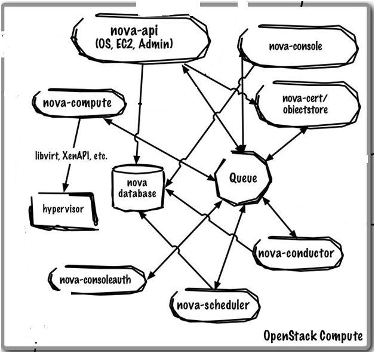
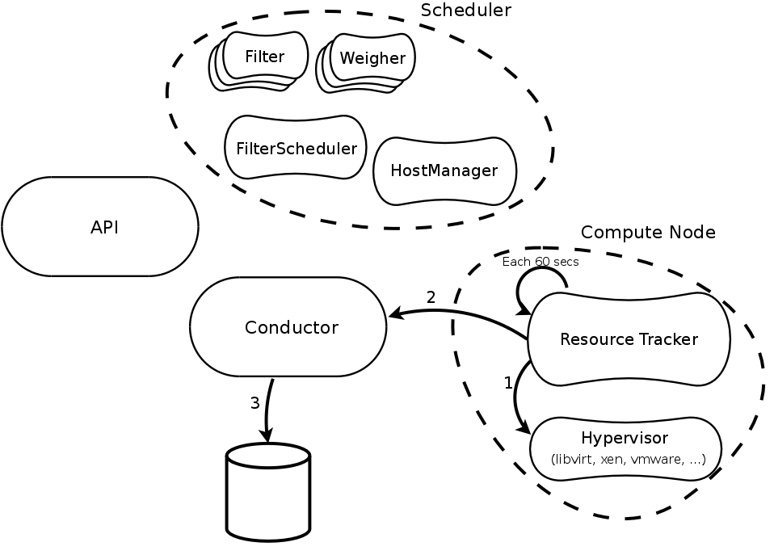
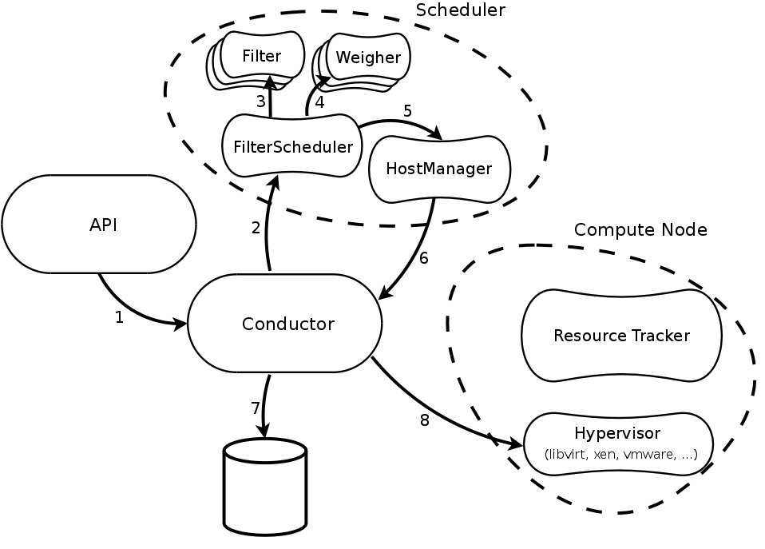
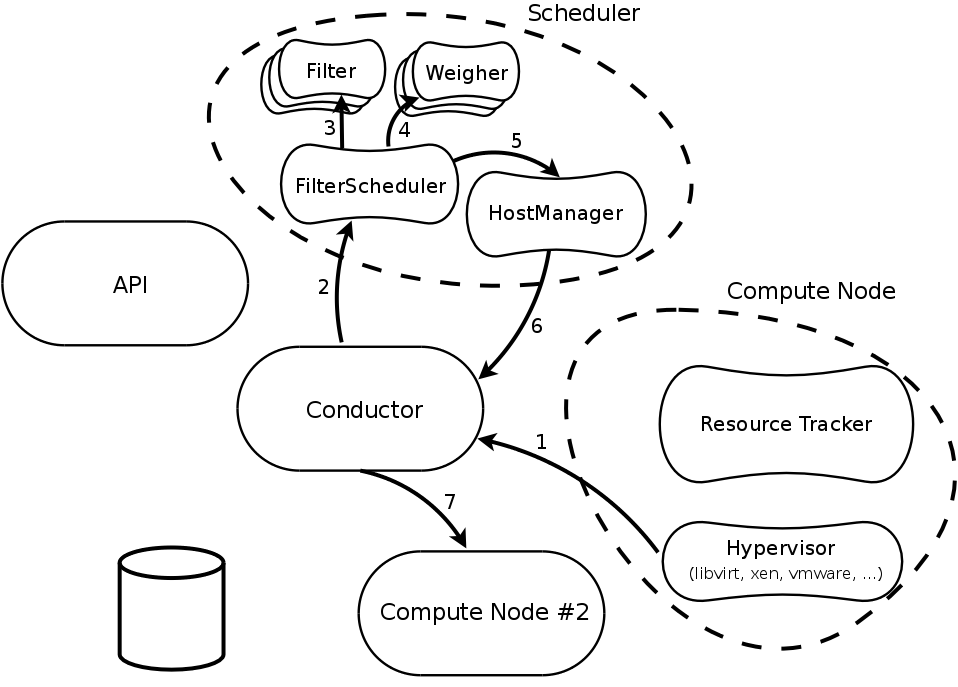

<!doctype html>
<html lang="en">

	<head>
		<meta charset="utf-8">

		<title>Enhancing OpenStack Projects with Advanced SLA and Scheduling</title>

		<meta name="description" content="Description">
		<meta name="author" content="Author">

		<meta name="apple-mobile-web-app-capable" content="yes" />
		<meta name="apple-mobile-web-app-status-bar-style" content="black-translucent" />

		<meta name="viewport" content="width=device-width, initial-scale=1.0, maximum-scale=1.0, user-scalable=no">

		<link rel="stylesheet" href="css/reveal.min.css">
		
		
		<!-- set the theme to white-rh - white background -->
		<link rel="stylesheet" href="css/theme/white-rh.css" id="theme">

		<!-- For syntax highlighting -->
		<link rel="stylesheet" href="lib/css/zenburn.css">

		<!-- If the query includes 'print-pdf', include the PDF print sheet -->
		<script>
			if( window.location.search.match( /print-pdf/gi ) ) {
				var link = document.createElement( 'link' );
				link.rel = 'stylesheet';
				link.type = 'text/css';
				link.href = 'css/print/pdf-rh.css';
				document.getElementsByTagName( 'head' )[0].appendChild( link );
			}
		</script>
		
		<!-- Begin added by SCE -->
		<!-- script type="text/javascript" src="http://ajax.googleapis.com/ajax/libs/jquery/1.8.2/jquery.min.js"></script -->
		<script type="text/javascript" src="plugin/jquery/jquery.min.js"></script>
		<!-- script src="http://code.highcharts.com/highcharts.js"></script -->
		<script src="plugin/highcharts/highcharts.js"></script>
		<!-- script src="http://code.highcharts.com/modules/exporting.js"></script -->
		<script src="plugin/highcharts/exporting.js"></script>
		

		<style type="text/css">
                        .rh-header {
                           position: relative;
                           width: 100%;
                           height: 50px;
                           text-align: center;
                           font-family: "Overpass", "Liberation Sans", sans-serif;
                           font-size: 18px;
                           font-weight: normal;
                           letter-spacing: -0.02em;
                           color: #eeeeee;
                        }
			.ribbon {
			   position: absolute;
			   top: 10px;
			   right: 10px;
         border: none;
			}
			p { text-align: left; }

			.reveal table th,
			.reveal table td {
			  text-align: left;
			  padding: 0.2em 0.5em 0.2em 0.5em;
			  border-bottom: 1px solid; }
			.reveal table tr:last-child td { border-bottom: none; }
		</style>
		
		<!-- end content added by SCE --> 
			
			
		<!--[if lt IE 9]>
		<script src="lib/js/html5shiv.js"></script>
		<![endif]-->
	</head>

	<body>
		<div class="reveal">

			<!-- Any section element inside of this container is displayed as a slide -->
			<div class="slides"> 
			<section data-markdown>
        <script type="text/template">
          <section data-background="images/rh_vancouver_bg.jpg" data-transition="slide">
<table>
  <tr>
    <td style="width: 50%;">
    <td style="width: 50%; text-align: right;">
  </tr>
</table>
<h1 align=left>Enhancing OpenStack Projects</h1>
<h1 align=left>with Advanced SLA and Scheduling</h1>

<h2 align=left style='color: #fff;'>Deep dive in the Nova scheduler</h2>
<br/>

<table width=100%>
  <tr >
    <td style="width: 50%;"><h3 style='color: #fff;'>Sylvain Bauza<br/>Senior Software Engineer, Red Hat<br/></h3>
    <td style="width: 50%; text-align: right;"><h3 style='color: #fff;'>Don Dugger<br/>Senior Software Engineer, Intel<br/></h3>
  </tr>
</table>
<br/>
<h3 align=center style='color: #fff;'>2015/05/18 - OpenStack Liberty Summit, Vancouver BC<br/></h3>
      <aside class="notes">
      Introduce ourselves: <br/>
      - our job</br>
      - what we do for Nova</br>
      - how long are we working on the project
      </aside>
           </section>
        </script>
      </section>


      <section data-markdown>
        <script type="text/template">
        <!-- .slide: data-background="images/vancouver_footer.png"  data-background-size="contain" data-transition="slide" -->
          ## Agenda

          - Scheduler 101
          - How to split your cloud
          - Limitations and efforts
          - What future ?
      <aside class="notes">
      Be quick, not detailed...
      </aside>
        </script>
      </section>

      <section data-markdown>
        <script type="text/template">
        <!-- .slide: data-background="images/vancouver_footer.png"  data-background-size="contain" data-transition="slide" -->
          ## SLA, you said ?

          *"An agreement between an IT Service Provider and a Customer"* (ITIL v3)
      <aside class="notes">
      Explain why we use the wording SLA to define the Scheduler</br>
      The users *wants* something, the scheduler *provides* something</br>
      This is the only place in a boot request where a contract is made.
      </aside>
        </script>
      </section>

      <section data-markdown>
        <script type="text/template">
          <section data-background="images/rh_vancouver_divider_bg.jpg">

          # The engine
          # under the hood

        </script>
      </section>

      <section data-markdown>
        <script type="text/template">
        <!-- .slide: data-background="images/vancouver_footer.png"  data-background-size="contain" data-transition="slide" -->

          ## Want a big picture ?
<div style="text-align: center;">
</div>
      <aside class="notes">
      Dont take too much on that, just present the components to make sure that newcomers know that.
      </aside>
        </script>
      </section>

      <section data-markdown>
        <script type="text/template">
        <!-- .slide: data-background="images/vancouver_footer.png"  data-background-size="contain" data-transition="slide" -->

          ## Not only one scheduler...
          - FilterScheduler
          - ChanceScheduler
          - CachingScheduler
          <br/><br/>
          - YourOwnScheduler

          <small>``scheduler_driver=nova.scheduler.filter_scheduler.FilterScheduler``</small>
      <aside class="notes">
      Explain the 3 schedulers and explain how its easy to add an out-of-tree scheduler
      </aside>
        </script>
      </section>


      <section data-markdown>
        <script type="text/template">
        <!-- .slide: data-background="images/vancouver_footer.png"  data-background-size="contain" data-transition="slide" -->

          ## FilterScheduler

<div style="text-align: center;">
</div>

        <aside class="notes">
        40 secs max for this slide, just say that each filter just provides a subset until there are a result of X hosts that are then randomly picked one per instance.</br>
        Explain that each filter only returns for each host True or False.</br>
        Keep the explanation of the weighting for a later slide
        </aside>
        </script>
      </section>


      <section data-markdown>
        <script type="text/template">
        <!-- .slide: data-background="images/vancouver_footer.png"  data-background-size="contain" data-transition="slide" -->

          ## Filters

          Activate the filters :

          <small>
          ``scheduler_available_filters=nova.scheduler.filters.all_filters``</small>

          Enable the filters :
          <small>
          ``scheduler_default_filters=RetryFilter,AvailabilityZoneFilter,RamFilter,
           ComputeFilter,ComputeCapabilitiesFilter,ImagePropertiesFilter,
           ServerGroupAntiAffinityFilter,ServerGroupAffinityFilter``
           </small><br/><br/>
           ... and many others

           <p style="text-align: center;">http://docs.openstack.org/developer/nova/devref/filter_scheduler.html</p>
        <aside class="notes">
        - Not all filters are default in nova.conf, you need to *check* add the ones you want </br>
        - You can add out-of-tree filters </br>
        - Brief overview of the given filters
        </aside>
        </script>
      </section>

      <section data-markdown>
        <script type="text/template">
        <!-- .slide: data-background="images/vancouver_footer.png"  data-background-size="contain" data-transition="slide" -->

          ## FilterScheduler weighers

<div style="text-align: center;">
</div>
        <aside class="notes">
        Weighers are poundering each host based on a specific metric. That sorts the list of hosts.
        </aside>
        </script>
      </section>

      <section data-markdown>
        <script type="text/template">
        <!-- .slide: data-background="images/vancouver_footer.png"  data-background-size="contain" data-transition="slide" -->

          ## Weighers (cont.)
          Enable the weighers :

          <small>
          ``scheduler_weight_classes=nova.scheduler.weights.all_weighers``</small>

          Current weighers :

          - RAMWeigher
          - IoOpsWeigher
        <aside class="notes">
        Again, totally modular for out-of-tree. Explain the two weighers.
        </aside>
        </script>
      </section>

      <section data-markdown>
        <script type="text/template">
        <!-- .slide: data-background="images/vancouver_footer.png"  data-background-size="contain" data-transition="slide" -->

          ## Resource Tracking


<div style="text-align: center;">
</div>

        <aside class="notes">
        Tell the workflow, each 60 secs unless the resources are identical.</br>
        All the resources come from the hypervisor, no other way. </br>
        Conductor writes to DB, since computes cant.</br>
        1 min max.
        </aside>
        </script>
      </section>

      <section data-markdown>
        <script type="text/template">
        <!-- .slide: data-background="images/vancouver_footer.png"  data-background-size="contain" data-transition="slide" -->

          ## Boot request


<div style="text-align: center;">
</div>
        <aside class="notes">
        Tell the workflow, comes from API to conductor, conductors calls (and wait for an answers), Scheduler picks lists from HostManager which reads DB etc.
        </aside>
        </script>
      </section>

      <section data-markdown>
        <script type="text/template">
        <!-- .slide: data-background="images/vancouver_footer.png"  data-background-size="contain" data-transition="slide" -->

          ## Rescheduling a request


<div style="text-align: center;">
</div>

        <aside class="notes">
        Exception comes from manager or driver, manager calls conductor for rescheduling by adding a retry field (not me) and increases by 1 number of retries
        </aside>
        </script>
      </section>

      <section data-markdown>
        <script type="text/template">
          <section data-background="images/rh_vancouver_divider_bg.jpg">

          # _Divide ut regnes_
          # your cloud
          <aside class="notes">
          15 mins from the start of the presentation.
          </aside>
        </script>
      </section>


      <section data-markdown>
        <script type="text/template">
        <!-- .slide: data-background="images/vancouver_footer.png"  data-background-size="contain" data-transition="slide" -->

          ## What kind of segregation ?

          - Physical
            - ~~Regions~~ (Keystone related)
            - Cells
            - Aggregates
            - Availability Zones (think OpenStack, please !)
          - Virtual
            - Server Groups
        <aside class="notes">
        Mention that we wont discuss about regions since its not scheduler related. Keep things brief, more to come after. <br/>
        Mention sgordon talk Compute 101 Tuesday 1205
        </aside>
        </script>
      </section>

      <section data-markdown>
        <script type="text/template">
        <!-- .slide: data-background="images/vancouver_footer.png"  data-background-size="contain" data-transition="slide" -->

          ## Aggregates

          - Groups of compute nodes (one host can be in multiple aggregates)
          - Invisible for end-users
          - Metadata-based

          - Related filters :
            - AggregateImagePropertiesIsolation
            - AggregateInstanceExtraSpecsFilter
            - AggregateMultiTenancyIsolation
            - AggregateCoreFilter
            - and others...
        <aside class="notes">
        Admin-only (RBAC policy), physical hosts.
        </aside>
        </script>
      </section>

      <section data-markdown>
        <script type="text/template">
        <!-- .slide: data-background="images/vancouver_footer.png"  data-background-size="contain" data-transition="slide" -->

          ## Availability Zones

          - Groups of nodes (only one AZ per host)
          - User-facing (explicit boot command option)
          - Aggregate with a specific metadata key (``availability_zone``)

          - Related filter :
            - AvailabilityZoneFilter
</br></br><center>
<pre><code class="bash" data-trim>
$ nova boot --availability-zone az1 myvm
</code></pre></center>
        <aside class="notes">
        "Who knows AWS availability zones ? (hands raising) Forget about that."
        </aside>
        </script>
      </section>

      <section data-markdown>
        <script type="text/template">
        <!-- .slide: data-background="images/vancouver_footer.png"  data-background-size="contain" data-transition="slide" -->

          ## Server Groups

          - Groups of _instances_
          - User-facing
          - Specific metadata called _policy_ (anti-affinity/affinity)

          - Related filters :
            - ServerGroupAntiAffinityFilter
            - ServerGroupAffinityFilter
</br></br><pre><code class="bash" data-trim>
$ nova server-group-create --policy anti-affinity group-1
$ nova boot --image IMAGE_ID --flavor 1 --hint group=SERVER_GROUP_UUID server-1
</code></pre>
        <aside class="notes">
        Since Icehouse, no deletion possible. Warning, races can occur.
        </aside>
        </script>
      </section>

      <section data-markdown>
        <script type="text/template">
        <!-- .slide: data-background="images/vancouver_footer.png"  data-background-size="contain" data-transition="slide" -->

          ## Cells

          - Sharding MQ and database per cell
            - Parent cell running nova-api
            - API calls proxied to child cells
          - Specific ``nova.cells.CellsScheduler``
          - Experimental !

<br/><p style="text-align: center;"><a href="http://docs.openstack.org/developer/nova/devref/cells.html#manifesto">http://docs.openstack.org/developer/nova/devref/cells.html#manifesto</a></p>
        <aside class="notes">
        Explain why experimental (API not fully supported like Security Groups or Neutron). Use it only if your called RAX or CERN.
        </aside>
        </script>
      </section>

      <section data-markdown>
        <script type="text/template">
          <section data-background="images/rh_vancouver_divider_bg.jpg">

          # OK, but what limitations ?
          <h3 style='color: #fff;'>(Unclassified information)
          </h3>

          <aside class="notes">
          25 mins for the start of the presentation.
          </aside>
        </script>
      </section>

      <section data-markdown>
        <script type="text/template">
        <!-- .slide: data-background="images/vancouver_footer.png"  data-background-size="contain" data-transition="slide" -->

          ## Exhibit A

          Did you enjoy troubleshooting a failing scheduling request ?
          
          - Think about nova.conf set to 
            <pre><code data-trim>
            debug = True
            </code></pre>
          <aside class="notes">
          Filters are not explaining why they fail, also check the req-id to get the instance. </br>
          NoValidHost exception also due to either reschedule, or because a failed filter.
          </aside>
        </script>
      </section>

      <section data-markdown>
        <script type="text/template">
        <!-- .slide: data-background="images/vancouver_footer.png"  data-background-size="contain" data-transition="slide" -->

          ## Exhibit B

          Do you like races ?

          - Computes nodes updating each 60 secs
          - Want multiple schedulers ? Bad idea.
          <aside class="notes">
          Racy by design : we dont want to lock the scheduler so we accept retries as a tradeoff. </br>
          That said, improvements can be done, like incremental updates or shared state for multiple schedulers.
          </aside>
        </script>
      </section>


      <section data-markdown>
        <script type="text/template">
        <!-- .slide: data-background="images/vancouver_footer.png"  data-background-size="contain" data-transition="slide" -->

          ## Exhibit C

          Scheduler performance

          - Scheduler scales per request (DB call)
          - ``CachingScheduler`` can help
          <aside class="notes">
          To keep in mind, the more requests you have, the more DB hits you will have. Tradeoff again with CachingScheduler.
          </aside>
        </script>
      </section>

      <section data-markdown>
        <script type="text/template">
        <!-- .slide: data-background="images/vancouver_footer.png"  data-background-size="contain" data-transition="slide" -->

          ## Exhibit D

          Technical debt

          - Interfaces with other Nova components
          - Compute Claims
          <aside class="notes">
          Lots of interactions, blobs as dicts, not versioned, not typed. Resources can be claimed, but not so simple if its not an integer but rather complex. Use NUMAFilter as an example. </br>
          Mention that claims are used for rescheduling - by design again. But claims could also be on the Scheduler.
          </aside>
        </script>
      </section>

      <section data-markdown>
        <script type="text/template">
        <!-- .slide: data-background="images/vancouver_footer.png"  data-background-size="contain" data-transition="slide" -->

          ## Kilo efforts

          - Tech debt reduction
            - Separation between service and compute nodes
            - Modify how the filters get information from the HostManager
            - Tests refactoring
          - New scheduler client
        </script>
      </section>

      <section data-markdown>
        <script type="text/template">
        <!-- .slide: data-background="images/vancouver_footer.png"  data-background-size="contain" data-transition="slide" -->

          ##  Hoping for Liberty

          Subject to discussion at the Design Summit
          
          - Tech debt reduction (again)
            - Clean-up the interfaces between the scheduler and Nova
            - Persist the request information with hints
            - Scrub the logs for helping operators
            - Availability Zones
          - Shared-state scheduler
          - Allocation ratios to the ResourceTracker
          - Check a destination before migrating
          - _Scheduler repository split_
          <aside class="notes">
          Keep vague on the last item and go quick to the next slide, thats all the surprise.
          </aside>
        </script>
      </section>

      <section data-markdown>
        <script type="text/template">
        <!-- .slide: data-background="images/vancouver_footer.png"  data-background-size="contain" data-transition="slide" -->

          ##  Wait, what ?
          <aside class="notes">
          Mention all the discussions we had previously
          </aside>
        </script>
      </section>

      <section data-markdown>
        <script type="text/template">
          <section data-background="images/rh_vancouver_divider_bg.jpg">

          # Manifesto for
          # better scheduling
          <aside class="notes">
          32 mins max from the beginning. Be quick, you need to rush to leave 5 mins for questions. </br>
          Try 3 mins for this whole section.
          </aside>
        </script>
      </section>

      <section data-markdown>
        <script type="text/template">
        <!-- .slide: data-background="images/vancouver_footer.png"  data-background-size="contain" data-transition="slide" -->

          ## You promised me _Advanced_ SLA, right ?

          - Yeah, let me tell you some stories...
          <aside class="notes">
          20 secs on that slide, just introducing back the concept of SLA.
          </aside>
        </script>
      </section>

      <section data-markdown>
        <script type="text/template">
        <!-- .slide: data-background="images/vancouver_footer.png"  data-background-size="contain" data-transition="slide" -->

          ## The pets vs. cattle story

          - _"What if I want golden VMs ?"_

          <aside class="notes">
          Just mention the use-case, not the solution and show how its not possible now.
          </aside>
        </script>
      </section>

      <section data-markdown>
        <script type="text/template">
        <!-- .slide: data-background="images/vancouver_footer.png"  data-background-size="contain" data-transition="slide" -->

          ## The Affinity story

          - _"I want a boot-from-volume VM on the same rack than my SAN bay"_
          - _"I want a VM with at least 1GBps bandwidth port"_
          - _"I want my containers from the same pod not on the same machine"_
          <aside class="notes">
          Again, just keep it brief, give only those examples to point out how we need cross-project scheduling
          </aside>
        </script>
      </section>


      <section data-markdown>
        <script type="text/template">
        <!-- .slide: data-background="images/vancouver_footer.png"  data-background-size="contain" data-transition="slide" -->

          ## The Modularity story

          - Do you need to update all the resources ?
          - Do you need all filters ?
          - Do you want to add some extra resources ?
          <aside class="notes">
          Brief, brief. Just show that we dont want something monolithic - at least we need to keep the existing and improve it.
          </aside>
        </script>
      </section>


      <section data-markdown>
        <script type="text/template">
        <!-- .slide: data-background="images/vancouver_footer.png"  data-background-size="contain" data-transition="slide" -->

          ## The AWS story

          - I want to have spot-instances in OpenStack
          <aside class="notes">
          Mention that users want reservations for OpenStack. We can only schedule *now*, not in the future for Capacity Planning.
          </aside>
        </script>
      </section>


      <section data-markdown>
        <script type="text/template">
        <!-- .slide: data-background="images/vancouver_footer.png"  data-background-size="contain" data-transition="slide" -->

          ## Along the road

          - We need a better velocity for improving the scheduler features
          - We need to reduce the inherited technical debt
          - How to tackle all these efforts ?
            - The ~~Gantt~~ Nova-scheduler team
            - Splitting the code ? A new project ?
            - Your help is welcome
          <aside class="notes">
          Last slide, keep it quick and open, just mention that the talks for splitting out the scheduler are still to come in the Design Summit. </br>
          Dont mention that we *will* split, just that its open for discussion and mention the Gantt repo wipe we recently did.</br>

          Adjust the duration of this slide with the remaining time. You should be at 5 mins left.
          </aside>
        </script>
      </section>

      <section data-markdown>
        <script type="text/template">
          <section data-background="images/rh_vancouver_divider_bg.jpg">

          # Thank you

        </script>
      </section>

			</div>

		</div>

		<script src="lib/js/head.min.js"></script>
		<script src="js/reveal.min.js"></script>
		
		

		<script>

			// Full list of configuration options available here:
			// https://github.com/hakimel/reveal.js#configuration
			Reveal.initialize({
				controls: false,
				progress: true,
				history: true,
				center: true,
				// The "normal" size of the presentation, aspect ratio will be preserved
    				// when the presentation is scaled to fit different resolutions. Can be
    				// specified using percentage units.
				width: 1920,
				height: 1080,
        margin: 0,

				theme: Reveal.getQueryHash().theme, // available themes are in /css/theme
				transition: Reveal.getQueryHash().transition || 'linear', // default/cube/page/concave/zoom/linear/fade/none

				// Optional libraries used to extend on reveal.js
				dependencies: [
        				// Cross-browser shim that fully implements classList - https://github.com/eligrey/classList.js/
					{ src: 'lib/js/classList.js', condition: function() { return !document.body.classList; } },

				        // Interpret Markdown in <section> elements
					{ src: 'plugin/markdown/marked.js', condition: function() { return !!document.querySelector( '[data-markdown]' ); } },
					{ src: 'plugin/markdown/markdown.js', condition: function() { return !!document.querySelector( '[data-markdown]' ); } },

        				// Syntax highlight for <code> elements
					{ src: 'plugin/highlight/highlight.js', async: true, callback: function() { hljs.initHighlightingOnLoad(); } },

        				// Zoom in and out with Alt+click
					{ src: 'plugin/zoom-js/zoom.js', async: true, condition: function() { return !!document.body.classList; } },

        				// Speaker notes
					{ src: 'plugin/notes/notes.js', async: true, condition: function() { return !!document.body.classList; } },

        				// Remote control your reveal.js presentation using a touch device
					// Visit remot.io to configure
        				//{ src: 'plugin/remotes/remotes.js', async: true, condition: function() { return !!document.body.classList; } },

					// socket.io for multiplexing
					//{ src: 'http://cdnjs.cloudflare.com/ajax/libs/socket.io/0.9.10/socket.io.min.js', async: true },
					//{ src: 'plugin/socket.io/socket.io.min.js', async: true },
					//{ src: 'plugin/multiplex/client.js', async: true }
					//{ src: 'plugin/multiplex/master.js', async: true }
				]
			});
			
			Reveal.addEventListener( 'slidechanged', function( event ) {
			    // redrawChart();     
			} );

		</script>

    <script>
      (function(i,s,o,g,r,a,m){i['GoogleAnalyticsObject']=r;i[r]=i[r]||function(){
      (i[r].q=i[r].q||[]).push(arguments)},i[r].l=1*new Date();a=s.createElement(o),
      m=s.getElementsByTagName(o)[0];a.async=1;a.src=g;m.parentNode.insertBefore(a,m)
      })(window,document,'script','//www.google-analytics.com/analytics.js','ga');

      ga('create', 'UA-62682619-1', 'auto');
      ga('send', 'pageview');

    </script>
	</body>
</html>
